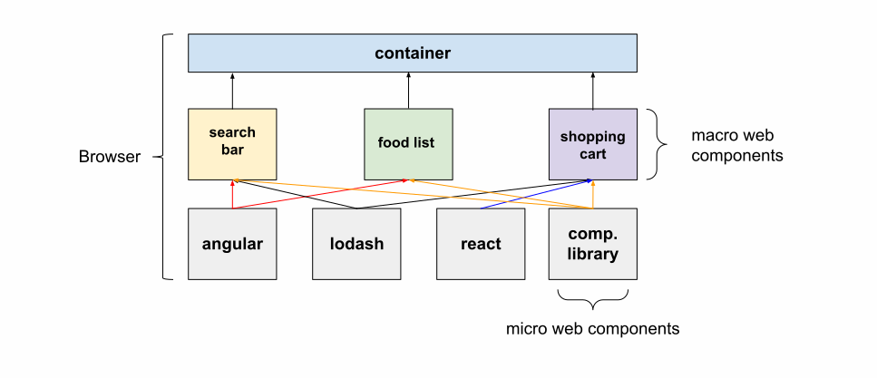
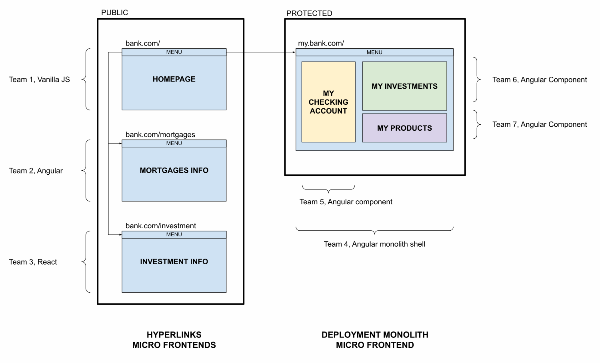
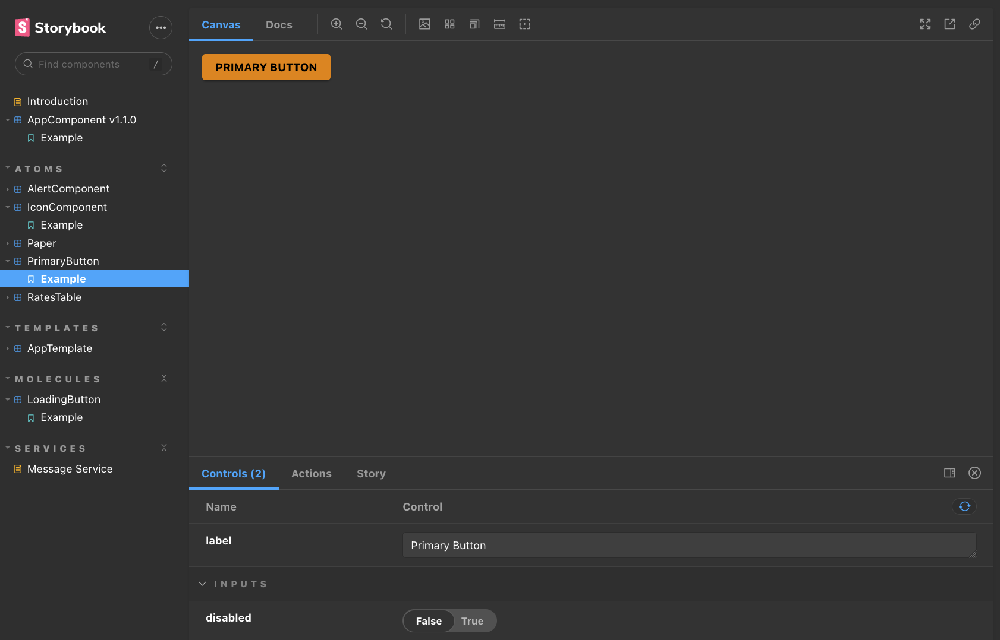

# Micro Frontends Note: * 1 hour interactive session * brief overview followed by some examples * Ask questions! * Assignments
# TODO * Why? * What MFEs? * target audience: from junior to senior, back-end and front-end. React, Angular, Vue. * Who is (or has been) at a project with more than 10 devs? More than 50? More than 200? * Who is at a project that uses micro services? Why do they use it? (Later: ask to apply micro services to the front-end) * MFEs are not new
github.com/mdvanes
Why Microfrontends?
[Go to order form](#) Note: * hyperlinks
* hyperlinks * iframes * deployment monolith * Web Components * Module Federation Note: * TODO How (deployment) monoliths? * TODO Component libraries / shared components -> micro Web Components -> Monorepos * TODO Dependencies (e.g. lodash in diagram) and deduplication * TODO Communication between MFEs. Navigation between. * TODO App State Management (custom communcation layer)



Monorepos
```ts [] // apps/demo/webpack.config.js const createPlugins = (mapping) => { return [ new ModuleFederationPlugin({ remotes: { portfolio: `portfolio@${mapping["portfolio"]}/remoteEntry.js`, }, shared: { "@angular/core": { singleton: true, strictVersion: true }, "@angular/common": { singleton: true, strictVersion: true }, "@angular/common/http": { singleton: true, strictVersion: true, }, "@angular/router": { singleton: true, strictVersion: true }, ...sharedMappings.getDescriptors(), }, }), sharedMappings.getPlugin(), ]; }; ... plugins: webpackHelper.createPlugins({ portfolio: "http://localhost:4201/nx-reference-portfolio", }), ... // apps/portfolio/webpack.config.js output: { uniqueName: "portfolio", publicPath: "auto", }, ... plugins: [ new ModuleFederationPlugin({ name: "portfolio", filename: "remoteEntry.js", exposes: { "./Module": "apps/portfolio/src/app/remote-entry/entry.module.ts", }, shared: { "@angular/core": { singleton: true, strictVersion: true }, "@angular/common": { singleton: true, strictVersion: true }, "@angular/common/http": { singleton: true, strictVersion: true, }, "@angular/router": { singleton: true, strictVersion: true }, ...sharedMappings.getDescriptors(), }, }), sharedMappings.getPlugin(), ], ```